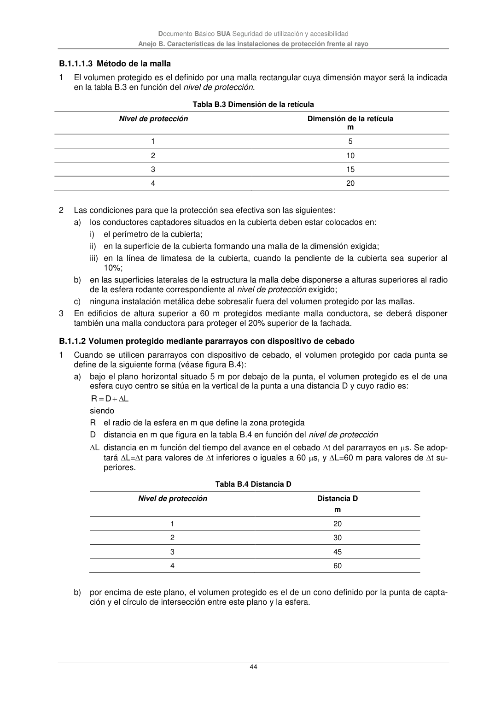

DB-SUA · B.1.1.2 Volumen protegido mediante pararrayos con dispositivo de cebado · versión 2022-06-14 · capa oficial
Formatos: JSON compacto · Markdown · PDF fuente
Ámbito del documento · texto del ámbito · documento y tablas
ID técnico a0159 · PDF pág. 44-45 · jerarquía no validada por persona · contrastado con el literal de la página 44 (marcador PDF); no validado por persona · padre: a0158
Documento Básico SUA Seguridad de utilización y accesibilidad Anejo B. Características de las instalaciones de protección frente al rayo 44 B.1.1.1.3 Método de la malla 1 El volumen protegido es el definido por una malla rectangular cuya dimensión mayor será la indicada en la tabla B.3 en función del nivel de protección. Tabla B.3 Dimensión de la retícula Nivel de protección Dimensión de la retícula m 1 5 2 10 3 15 4 20 2 Las condiciones para que la protección sea efectiva son las siguientes: a) los conductores captadores situados en la cubierta deben estar colocados en: i) el perímetro de la cubierta; ii) en la superficie de la cubierta formando una malla de la dimensión exigida; iii) en la línea de limatesa de la cubierta, cuando la pendiente de la cubierta sea superior al 10%; b) en las superficies laterales de la estructura la malla debe disponerse a alturas superiores al radio de la esfera rodante correspondiente al nivel de protección exigido; c) ninguna instalación metálica debe sobresalir fuera del volumen protegido por las mallas. 3 En edificios de altura superior a 60 m protegidos mediante malla conductora, se deberá disponer también una malla conductora para proteger el 20% superior de la fachada. B.1.1.2 Volumen protegido mediante pararrayos con dispositivo de cebado 1 Cuando se utilicen pararrayos con dispositivo de cebado, el volumen protegido por cada punta se define de la siguiente forma (véase figura B.4): a) bajo el plano horizontal situado 5 m por debajo de la punta, el volumen protegido es el de una esfera cuyo centro se sitúa en la vertical de la punta a una distancia D y cuyo radio es: L D R siendo R el radio de la esfera en m que define la zona protegida D distancia en m que figura en la tabla B.4 en función del nivel de protección L distancia en m función del tiempo del avance en el cebado t del pararrayos en s. Se adop- tará L=t para valores de t inferiores o iguales a 60 s, y L=60 m para valores de t su- periores. Tabla B.4 Distancia D Nivel de protección Distancia D m 1 20 2 30 3 45 4 60 b) por encima de este plano, el volumen protegido es el de un cono definido por la punta de capta- ción y el círculo de intersección entre este plano y la esfera. Documento Básico SUA Seguridad de utilización y accesibilidad

PDF fuente redistribuible: copia fiel enlazada en esta página (SHA256 verificado).